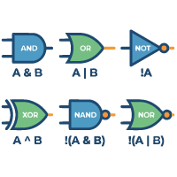

論理演算子とは

- プロンプト例
JavaScriptの論理演算子について詳しく解説して
論理演算子は、複数の条件を組み合わせたり、真偽値（true / false）を操作するための演算子
主に次の3つがあります：
| 演算子 | 意味 | 読み方 |
|---|---|---|
| && | AND（かつ） | &(アンパサンド) |
| ｜｜ | OR（または） | ｜(パーティカルライン) |
| ! | NOT（否定） | ! (エクスクラメーション) |
🔹 1. AND演算子 &&
両方が true のときのみ true
true && true // true true && false // false false && true // false false && false // false
【例】
const age = 20; const hasID = true; if (age >= 18 && hasID) { console.log('入場可能'); }
→ 18歳以上 かつ 身分証あり → OK
🔸 ショートサーキット（短絡評価）
false && someFunction();
→ false が確定した時点で 右側は評価されない
実用例
user && user.login();
→ user が null ならエラー防止
🔹 2. OR演算子 ||
どちらか一方でも true なら true
true || true // true true || false // true false || true // true false || false // false
【例】
const isAdmin = false; const isEditor = true; if (isAdmin || isEditor) { console.log("編集可能"); }
🔸 デフォルト値の設定（超重要）
const name = input || 'ゲスト';
| input | 結果 |
|---|---|
| 'Taro' | 'Taro' |
| ' ' | 'ゲスト' |
| 0 | 'ゲスト' |
| null | 'ゲスト' |
⚠ 注意：0 や "" も false と判定される
→ ES2020以降は ?? が推奨
const name = input ?? 'ゲスト';
🔹 3. NOT演算子 !
真偽を反転する
!true // false !false // true
【例】
if (!isLoggedIn) { console.log("ログインしてください"); }
🔸 真偽値変換（!!）
!!'hello' // true !!0 // false !!null // false
→ 値をBoolean型に変換するテクニック
🔹 論理演算子の「戻り値」の正体（超重要）
JavaScriptの論理演算子は、true / false を返すとは限らないのが最大の特徴です。
🔸 AND（&&）の戻り値
A && B
→ AがfalseならA、trueならB
'OK' && 'YES' // 'YES' 0 && 'YES' // 0 true && 5 // 5
🔸 OR（||）の戻り値
A || B
→ AがtrueならA、falseならB
'OK' || 'YES' // 'OK' 0 || 'YES' // 'YES' null || 10 // 10
🔹 実務でよく使うパターン
① 条件付き実行
isReady && start();
② フォールバック処理
const port = env.PORT || 3000;
③ 三項演算子との組み合わせ
const msg = isLogin && isAdmin ? '管理者' : '一般ユーザー';
🔹 論理演算子の優先順位
| 優先度 | 演算子 |
|---|---|
| 高 | ! |
| 中 | && |
| 低 | ｜｜ |
true || false && false // → true || (false && false) // → true
🔹 よくあるバグ・落とし穴
❌ 0 や "" を false と判定してしまう
const count = input || 10;
input = 0 → 10 になってしまう ❌
→ 正解：
const count = input ?? 10;
❌ && と || の評価順序ミス
a || b && c
→ a || (b && c)
🔹 まとめ
| 演算子 | 意味 | ポイント |
|---|---|---|
| && | AND | 左がtrueなら右 |
| ｜｜ | OR | 左がfalseなら右 |
| ! | NOT | 反転 |
| ?? | Null合体 | null, undefinedのみ |